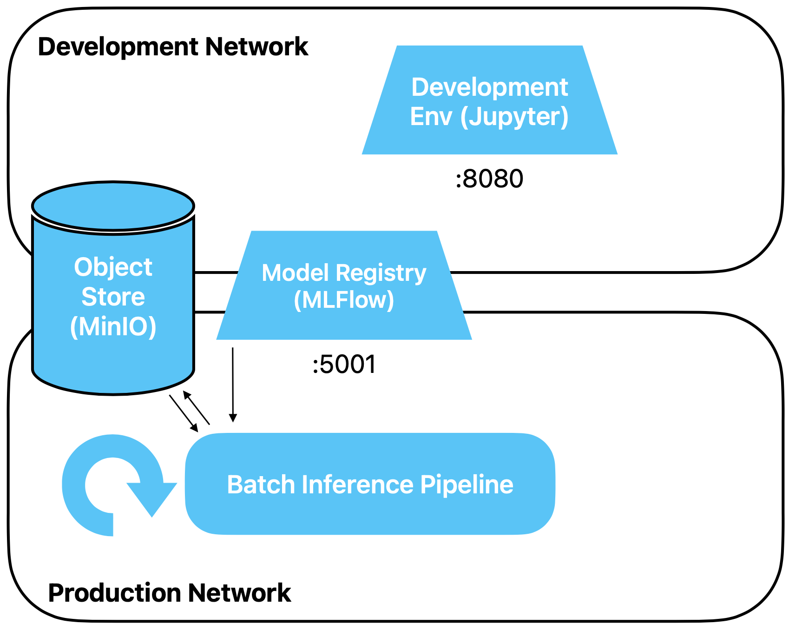

Batch Inference
Unser Modell ist fertig trainiert und in der Registry abgelegt. Nun möchten wir es benutzen, um
Vorhersagen mittels einer Batch Pipeline zu machen. Frische (Roh-)Daten, für welche wir eine
Prediction benötigen, werden einem Umsystem bzw. von einem externen Prozess entweder in Batches
oder laufend in den Object Store geschrieben. Unsere Pipeline wird periodisch, zum Beispiel
einmal pro Nacht, aktiviert, holt die Daten der vergangenen Periode, macht Predictions für diese
Daten und schreibt das Resultat zurück in den Object Store.
Vorbereitung
Erstelle ein neues Jupyter Notebook für diese Übung.
Übungen
Architektur
Wir fügen unserer Architektur die erste Pipeline hinzu. Die Pipeline holt das Modell aus MLFlow.
Die Daten für die Inferenz liest sie, zum Beispiel einmal jede Nacht, aus dem Object Store.
Dorthin schreibt sie auch die Predictions zurück.

Inferenz-Daten simulieren
Zuerst benötigen wir Code, um einen Bucket mit Daten, für welche wir Inferenz machen wollen, zu
erstellen.
Wir machen es uns hier einfach und stellen keine frischen Daten her, sondern verwenden die
Trainingsdaten. In der Übung zu Stream Processing werden wir dann frische Daten auf eine bessere
Weise simulieren.
Lade die Trainingsdaten, entferne das Label und füge als erste Column im DataFrame eine Spalte
mit Namen event_date hinzu. Das Event Date soll vom Typ datetime64[ns] sein
und je ca. ein Viertel der Rows soll einen der folgenden vier Werte haben: 2024-09-11,
2024-09-12, 2024-09-13, 2024-09-14.
Lösungsvorschlag
import pandas as pd
import numpy as np
# you can ignore the FutureWarning
df = pd.read_parquet('s3://traindata/train_raw.parquet', storage_options={"anon": False}).drop('class', axis='columns')
# quick and dirty way to add an event date column
df.insert(0, 'event_date', -1)
num_days = 4
for chunk, date_ in zip(np.array_split(df, num_days), pd.date_range("2025-02-12", periods=num_days, freq="d")):
chunk.event_date = date_
df = pd.concat([df, chunk], axis='rows')
# we need to remove all original rows, those are now duplicates since we simply concatenated
df = df[df.event_date != -1]
df.head()
Wir erstellen einen neuen Bucket
import s3fs
s3 = s3fs.S3FileSystem()
s3.mkdir("inferencedata")
Und legen die Daten ab.
df.to_parquet('s3://inferencedata/inference_raw.parquet', storage_options={"anon": False})
Modell laden
Nun beginnt der Code der Pipeline.
Lade als erstes dein Modell aus MLFlow. Du kannst das Modell auf verschiedene Arten
referenzieren. Im Idealfall machst du dies via Modell-Namen und einen Versions-Alias.
Lösungsvorschlag
import mlflow
# we never defined an official name, make sure you use the name of your own registered model here
model_name = "mushroom"
# this also only works if you set this alias for above model
model_version_alias = "champion"
model_uri = f"models:/{model_name}@{model_version_alias}"
model = mlflow.sklearn.load_model(model_uri)
Daten laden
Als nächstes lädst du die gerade eben generierten Daten. Lade aber nur die Daten von
gestern, und nicht alle Daten. Damit ist nicht gemeint, dass du alle Daten lädst und
dann filterst, sondern filtere bereits beim Laden nach dem Datum, um speicher-effizient zu
bleiben und weniger Network Traffic zu generieren.
Lösungsvorschlag
yesterday = pd.Timestamp.today() - pd.Timedelta(days=1)
yesterday = yesterday.replace(hour=0, minute=0, second=0, microsecond=0)
# only for debugging purposes
# yesterday = pd.to_datetime('2025-02-14') - pd.Timedelta(days=1)
sel = [("event_date", "==", yesterday)]
df = pd.read_parquet('s3://inferencedata/inference_raw.parquet', filters=sel, storage_options={"anon": False})
df.head()
Inferenz duchführen
Führe nun die Inferenz auf den geladenen Daten durch. Hänge eine Spalte mit Namen
prediction hinten an den DataFrame df an.
Lösungsvorschlag
df['prediction'] = model.predict(df.drop('event_date', axis='columns'))
Resultat zurück in den Object Store schreiben
Nun kannst du das resultat zurückschreiben. Wir sind bequem und verzichten darauf, einen neuen
Bucket zu erstellen.
df.to_parquet('s3://inferencedata/inference_prediction.parquet', storage_options={"anon": False})
Wrapup
Du hast in dieser Übung eine einfache Batch Processing Pipeline mit Python/Pandas gebaut, welche
Inferenz für unser Mushroom Modell durchführt und das Resultat zurück in den Object Store
schreibt.
Dabei haben wir auch ein paar Abkürzungen genommen, was im Rahmen eines Kurses zwar vertretbar
ist, deren wir uns daber auch bewusst sein sollten:
- Batch Processing wird normalerweise mit Spark / PySpark gemacht und nicht mit Pandas.
Der Unterschied ist hier aber nicht relevant.
- Wir arbeiten mit einfachen Timestamps. Kein Handling von Zeitzonen, keine Konvertierung
in UTC. Normalisierung von Timestamps nach UTC ist ein wichtiger Schritt in
Datenpipelines.
- Wir loggen nichts, insb. keine operativen Metriken wie Speicherverbrauch
- Keine Tests, kein sauberes Error Handling
- Unsere Pipeline lebt in einem Jupyter Notebook. Um sie korrekt zu operationalisieren,
sollte sie in Form eines Skriptes von einem Orchestrierungstool wie Apache Airflow
aufgerufen werden. Dazu später mehr.
Und insbesondere:
Wir arbeiten mit den Rohdaten und machen kein Feature Engineering. Auch wenn wir ohne weiteres
in unserer Batch Pipeline Features berechnen könnten, wird dies, sobald die Anzahl von Features
und Modellen zunimmt, unhandlich.
Die Lösung ist die Verwendung eines Feature Stores, dazu später mehr.